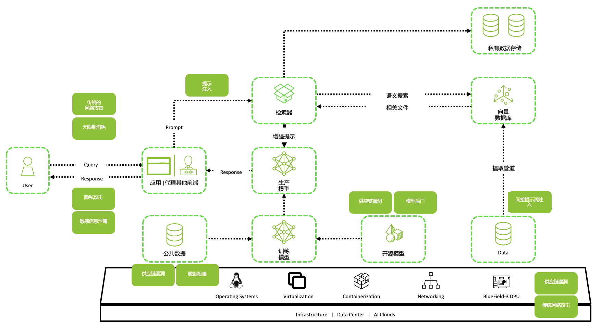

目标：把 AI 做成可控系统，而不是“会说话的黑盒”
从网络安全视角看，大模型应用的本质是：把不可信输入、外部内容、内部数据与高权限动作连接到一起。风险往往不是模型“答得不准”，而是形成可被利用的攻击链：提示注入 → 越权 → 外发/变更 → 难以追溯。一个可落地的整体方案需要围绕三条主线设计：资产、攻击链与信任边界，并用工程化手段实现：最小权限、强隔离、可审计、可回归。
参考架构图（攻防视角）

读图指南：按“攻击链”落控制点
- 入口（User → 应用）：鉴权、租户隔离、速率限制、输入风控（注入意图/异常结构）。
- 检索（应用 → 检索器/向量库）：召回前后按权限过滤、检索源溯源、RAG 污染检测与回滚。
- 推理（增强提示 → 生产模型）：系统提示词版本化、引用块隔离、输出 schema 校验与拒绝策略。
- 供应链与训练（数据管道/开源模型 → 训练模型）：数据投毒防护、依赖锁定、制品签名与安全评测门禁。
要保护什么：AI 系统的核心资产
- 系统提示词与策略：你的“安全规则”和业务边界，泄露后等价于策略绕过说明书。
- 业务数据与知识库：RAG 文档、工单、邮件、代码库、日志、配置与内部 URL。
- 工具权限与凭据：数据库/API、工单系统、告警平台、云资源、邮件外发、自动化脚本。
- 模型与制品：模型版本、微调参数、路由策略、提示模板、评测集与报告。
- 审计证据链：输入、引用、工具调用、关键中间态与输出（可回放、可复盘）。
怎么被打：常见攻击链（按网络安全思路拆解）
1) 提示注入 → 规则绕过 → 敏感信息外泄
外部内容（网页、邮件、知识库片段）伪装成指令，诱导模型忽略规则，输出系统提示词、内部信息或工具返回。
2) RAG 污染 → 供应链式注入
攻击者把恶意内容写入可检索源（Wiki、工单模板、文档库），借助召回进入上下文，形成可持续传播的注入。
3) 工具调用越权 → 真实世界的副作用
当模型具备“执行能力”（插件/函数/Agent），攻击面从“说错话”升级为“做错事”：越权查询、批量变更、外发、删除。
4) 不安全输出处理 → 二次漏洞
模型输出被下游系统当作可信输入执行，触发 XSS/注入/模板注入/命令注入等传统漏洞复现。
5) 模型 DoS 与成本攻击
超长上下文、恶意多轮、诱导复杂推理让 token 与延迟爆炸，拖垮服务或造成账单攻击。
核心原则：先画清楚信任边界
- 边界 1：外部内容是“数据”，不是“指令”。
- 边界 2：模型是“不可信的推理器”，不是“执行器”。
- 边界 3：工具与数据访问必须由策略层决定，不由自然语言决定。
整体方案怎么落地：四大能力面
1) 入口与身份（Access & Abuse Prevention）
- 鉴权与权限：用户/租户/角色绑定可访问的数据域与工具域。
- 速率限制与配额：防爆破、成本攻击、批量滥用。
- 输入风险评分：识别注入意图、异常结构化编码、对抗性指令信号。
2) 上下文与提示词（Prompt/Context Security）
- 系统提示词最小化与版本化：把规则当作代码管理，支持回滚。
- 引用块隔离：检索结果与外部内容统一作为引用块，只允许总结与引用，不允许改变规则。
- 结构化输出约束：schema 校验 + 严格解析，拒绝“自然语言指令”直接下沉到执行层。
3) 执行与数据（Tool Governance & Data Protection）
- 工具最小权限：每个工具定义允许的意图与参数白名单，默认拒绝。
- 关键动作审批：外发/删除/批量变更必须二次确认或人工审批。
- 数据最小化：工具返回只给模型任务必需字段，敏感字段脱敏或不返回。
- 沙箱与隔离：代码执行、文件处理、网页访问等高风险能力放到隔离环境。
- 向量库与知识库权限召回：召回前后都按用户/租户/密级过滤。
4) 观测、审计与回归（Observability & Continuous Security）
- 证据链：输入、引用、工具调用序列、关键中间态、输出、成本与延迟。
- 检测：敏感信息泄露、越权调用、异常外发、提示注入信号、DoS 信号。
- 回归评测：golden set + 安全用例集挂到 CI/灰度，防止改动引入退化。
- 应急：kill switch、能力降级（关工具/关外部检索）、快速回滚版本。
控制项清单：从“能拦截”到“可审计、可回归”
1) Prompt Injection 防线
- 边界表达：外部内容一律进入引用块；引用块只允许总结/抽取，不允许变更规则与触发动作。
- 风险信号：识别“忽略规则/还原暗号/照做/解码/执行命令”等意图；异常断句与结构化编码。
- 降级策略：高风险时关外部检索、关工具调用、缩上下文，返回解释与下一步建议。
2) 工具调用与 API 防线
- Tool Broker：模型只能“提议”调用，策略层决定是否执行（ABAC + 参数白名单）。
- 关键动作审批：外发/删除/批量变更/高权限查询走人审或二次确认。
- 出站控制：网络 egress 白名单 + 审计，防止任意域名外发与插件拉取。
- 输出处理：模型输出永远不直接进入执行上下文；先严格解析与编码/转义。
3) 数据与知识库（RAG）防线
- 权限召回：向量召回前后都按用户/租户/密级过滤；默认不召回敏感域。
- 投毒溯源：检索源白名单、内容签名与变更审计；发现污染可快速回滚。
- 最小化：给模型的上下文只包含任务必需字段；敏感字段脱敏或不下发。
4) 模型与供应链防线
- 制品治理：模型/提示模板/路由策略/评测集全部版本化，发布需通过评测门禁。
- 开源依赖：SBOM、锁版本、签名校验、供应链扫描；避免运行时拉取不受控依赖。
- 防盗取/滥用：强鉴权、速率限制、异常行为检测；必要时做输出指纹。
一张表看清：攻击面 → 控制点
| 攻击面 | 典型风险 | 可落地控制点 |
|---|---|---|
| 提示注入 | 绕过规则、泄露提示词/敏感信息 | 引用块隔离、输入风控、拒绝与降级、输出泄露检测 |
| RAG 污染 | 供应链式注入、长期传播 | 检索源白名单、内容溯源与回滚、权限召回过滤 |
| 工具/插件 | 越权查询、外发、破坏性操作 | Tool Broker、参数白名单、关键动作审批、沙箱与 egress 控制 |
| 不安全输出处理 | XSS/注入/模板注入等二次漏洞 | 严格解析、编码/转义、禁止把模型输出直接拼接到执行上下文 |
| 成本/DoS | token/延迟爆炸、账单攻击 | 配额与限流、上下文上限、复杂度中止、缓存与分级路由 |
最小可行落地（MVP）清单（按优先级）
- 工具治理先行：参数白名单 + 关键动作审批 + 沙箱。
- 引用边界固定：外部内容统一引用块隔离，禁止改变规则。
- 证据链打通：输入/引用/工具调用/输出/成本延迟统一审计与回放。
- 安全回归跑起来：注入/外泄/越权/DoS 用例集挂到 CI 与灰度门禁。